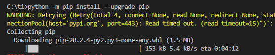

桌面端
Mac/Windows等系统中如何使用科学上网类工具的代理
背景
win10中用python的pip去安装库，但是速度太慢：
C:\ti>python -m pip install --upgrade pip
。。。
Collecting pip
Downloading pip-20.2.4-py2.py3-none-any.whl (1.5 MB)
|███ | 153 kB 5.4 kB/s eta 0:04:12

可以考虑给系统全局加代理，以提高pip的下载速度。
当然，也会给其他通过环境变量检测是否有代理的工具，用上对应的代理。
如何添加全局代理
在前序章节从客户端获取代理配置 · 网络中转站：代理技术获取到代理配置后，下面介绍如何使用代理
- 总体逻辑是：设置对应的
HTTP_PROXY、HTTPS_PROXY、ALL_PROXY环境变量 - 具体方式
Mac/Linux- 去终端
Terminal中，运行上述命令- 单行一次性运行
export HTTP_PROXY=http://127.0.0.1:58591; export HTTPS_PROXY=http://127.0.0.1:58591; export ALL_PROXY=socks5://127.0.0.1:51837 - 或 多行分别运行
export HTTP_PROXY=http://127.0.0.1:58591 export HTTPS_PROXY=http://127.0.0.1:58591 export ALL_PROXY=socks5://127.0.0.1:51837
- 单行一次性运行
- 去终端
Windows- 需要先把（Linux类的系统中的）
export改为（Windows中设置环境变量的）set，再去运行对应命令set HTTP_PROXY=http://127.0.0.1:1081 set HTTPS_PROXY=http://127.0.0.1:1081 set ALL_PROXY=socks5://127.0.0.1:1080 - 注
- Windows中如何确认变量已正确设置，可以用
set HTTP_PROXY set HTTPS_PROXY set ALL_PROXY - Windows中取消代理
set为空值set HTTP_PROXY= set HTTPS_PROXY= set ALL_PROXY=- 或
unsetunset HTTP_PROXY unset HTTPS_PROXY unset ALL_PROXY
- Windows中如何确认变量已正确设置，可以用
- 需要先把（Linux类的系统中的）
- 内部逻辑和含义
HTTP_PROXY：所有的http的请求都用此代理http://127.0.0.1:58591HTTPS_PROXY：所有的https的请求都用此代理http://127.0.0.1:58591ALL_PROXY：所有的、任何的网络请求都通过此代理socks5://127.0.0.1:51837
加代理后的效果
后续Python的pip
python -m pip install --upgrade pip
即可自动用上代理，实现下载加速。
此处效果很明显，从默认的pypi的官网下载库文件的速度，从之前的5.4 kB/s变成现在的104 kB/s，很快就下载完毕了：
C:\ti>python -m pip install --upgrade pip
Collecting pip
Downloading pip-20.2.4-py2.py3-none-any.whl (1.5 MB)
|████████████████████████████████| 1.5 MB 104 kB/s
Installing collected packages: pip
Attempting uninstall: pip
Found existing installation: pip 20.1.1
Uninstalling pip-20.1.1:
Successfully uninstalled pip-20.1.1
Successfully installed pip-20.2.4